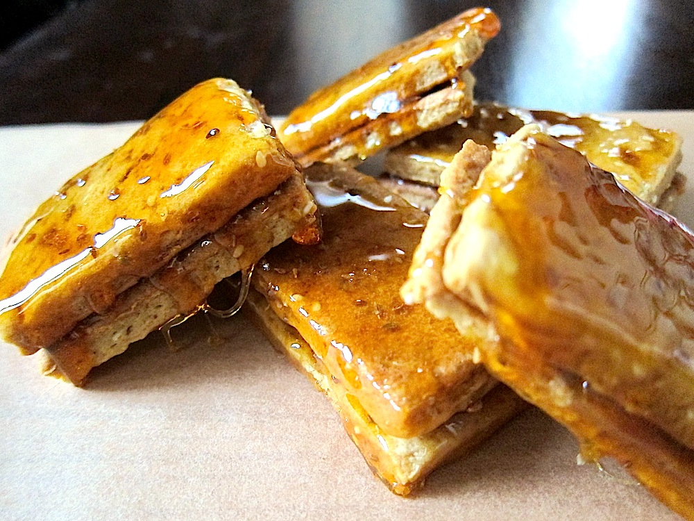

Hola bienvenidos al menu de platillos de Chile.
Platillo |
Imagen |
Informacion |
| 1-Chumbeque. |
 |
Dulce típico de la zona norte de Chile, elaborado a base de manteca, harina y capas de agregado que acostumbran a ser de mieles de frutas, como el limón o el mango. El chumbeque ha evolucionado hasta otros agregados como el manjar o el chocolate, dependiendo del productor. Una delicia para los golosos. |
|
2-Choriqeso.
|  |
Una extraña combinación que puede crear cierta sospecha al principio, pero que hay que probar para convencerse. Esta pequeña pieza de pan con relleno de pasta de chorizo y queso derretido, es típico de Punta Arenas, siendo el famoso Kiosco Roca el máximo exponente de esta preparación gastronómica. Por cierto, lo tradicional es comerlo con un vaso de leche con plátano, ¡atrévete! |
|
3-Curanto.
|
Tradicional preparación indígena típica de Chiloé. El original es el llamado “curanto en hoyo”, ya que tiene un método de cocción bien particular: se excava un agujero, se introducen piedras y se hace una fogata hasta que estén al rojo vivo (ver imagen de portada). Entonces se introducen los ingredientes, que suelen ser papas, longanizas, carne de cerdo, carne de vacuno, almejas y choritos. Luego se tapa con hojas de nalca y una capa de tierra, y se deja cocinar. Todo un monumento gastronómico. |